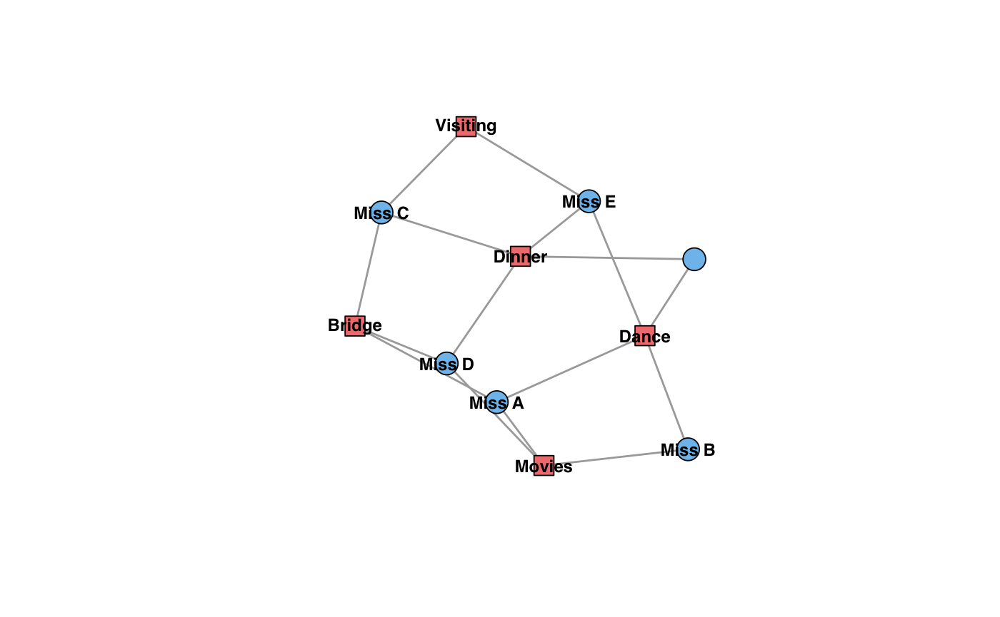
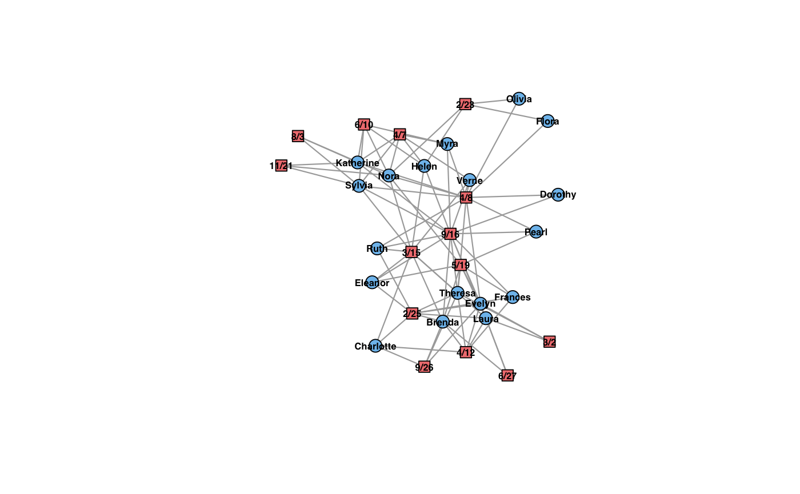

These functions add actor and event nodes (as desired) to a graph while maintaining its (temporal) affiliation network structure.
add_modes(graph, mode = 1, nv, ..., attr = list(), affiliations = NULL) add_actors(graph, nv, ..., attr = list(), events = NULL) add_events(graph, nv, ..., attr = list(), actors = NULL)
| graph | An affiliation network. |
|---|---|
| mode | Numeric or character; whether to project onto actors ( |
| nv, ..., attr | Arguments passed to |
| affiliations | A vector, or list of length |
| events | A vector, or list of length |
| actors | A vector, or list of length |
Original igraph functions:
add_vertices, add_edges
Other modal queries and manipulations: dualize,
mode_counts, modes,
schedule
actor_names <- c("Frances", "Dorothy") cbind( dynamic_triad_closure(women_group, type = "local"), dynamic_triad_closure( add_events(women_group, nv = 1, actors = actor_names, time = 0), type = "local" ), dynamic_triad_closure( add_events(women_group, nv = 1, actors = actor_names, time = 367), type = "local" ) )#> Warning: 'dynamic_wedges' is experimental.#> Warning: 'dynamic_wedges' is experimental.#> Warning: 'dynamic_wedges' is experimental.#> Warning: 'dynamic_wedges' is experimental.#> Warning: 'dynamic_wedges' is experimental.#> Warning: 'dynamic_wedges' is experimental.#> Warning: 'dynamic_wedges' is experimental.#> Warning: 'dynamic_wedges' is experimental.#> Warning: 'dynamic_wedges' is experimental.#> Warning: 'dynamic_wedges' is experimental.#> Warning: 'dynamic_wedges' is experimental.#> Warning: 'dynamic_wedges' is experimental.#> Warning: 'dynamic_wedges' is experimental.#> Warning: 'dynamic_wedges' is experimental.#> Warning: 'dynamic_wedges' is experimental.#> Warning: 'dynamic_wedges' is experimental.#> Warning: 'dynamic_wedges' is experimental.#> Warning: 'dynamic_wedges' is experimental.#> Warning: 'dynamic_wedges' is experimental.#> Warning: 'dynamic_wedges' is experimental.#> Warning: 'dynamic_wedges' is experimental.#> Warning: 'dynamic_wedges' is experimental.#> Warning: 'dynamic_wedges' is experimental.#> Warning: 'dynamic_wedges' is experimental.#> Warning: 'dynamic_wedges' is experimental.#> Warning: 'dynamic_wedges' is experimental.#> Warning: 'dynamic_wedges' is experimental.#> Warning: 'dynamic_wedges' is experimental.#> Warning: 'dynamic_wedges' is experimental.#> Warning: 'dynamic_wedges' is experimental.#> Warning: 'dynamic_wedges' is experimental.#> Warning: 'dynamic_wedges' is experimental.#> Warning: 'dynamic_wedges' is experimental.#> Warning: 'dynamic_wedges' is experimental.#> Warning: 'dynamic_wedges' is experimental.#> Warning: 'dynamic_wedges' is experimental.#> Warning: 'dynamic_wedges' is experimental.#> Warning: 'dynamic_wedges' is experimental.#> Warning: 'dynamic_wedges' is experimental.#> Warning: 'dynamic_wedges' is experimental.#> Warning: 'dynamic_wedges' is experimental.#> Warning: 'dynamic_wedges' is experimental.#> Warning: 'dynamic_wedges' is experimental.#> Warning: 'dynamic_wedges' is experimental.#> Warning: 'dynamic_wedges' is experimental.#> Warning: 'dynamic_wedges' is experimental.#> Warning: 'dynamic_wedges' is experimental.#> Warning: 'dynamic_wedges' is experimental.#> Warning: 'dynamic_wedges' is experimental.#> Warning: 'dynamic_wedges' is experimental.#> Warning: 'dynamic_wedges' is experimental.#> Warning: 'dynamic_wedges' is experimental.#> Warning: 'dynamic_wedges' is experimental.#> Warning: 'dynamic_wedges' is experimental.#> [,1] [,2] [,3] #> [1,] 0.4496124 0.4365079 0.4496124 #> [2,] 0.6052632 0.6052632 0.6052632 #> [3,] 0.5144509 0.5058824 0.5144509 #> [4,] 0.4871795 0.4871795 0.4871795 #> [5,] 1.0000000 1.0000000 1.0000000 #> [6,] 0.0000000 0.4782609 0.0000000 #> [7,] 0.5652174 0.5652174 0.5652174 #> [8,] 0.4666667 0.4482759 0.4666667 #> [9,] 0.5000000 0.4939759 0.5000000 #> [10,] 0.5185185 0.5185185 0.5185185 #> [11,] 0.4285714 0.4285714 0.4285714 #> [12,] 0.4285714 0.4285714 0.4285714 #> [13,] 0.5714286 0.5714286 0.5714286 #> [14,] 0.7207792 0.7189542 0.7207792 #> [15,] 0.5714286 0.5714286 0.5714286 #> [16,] 0.0000000 0.3750000 0.0000000 #> [17,] 1.0000000 1.0000000 1.0000000 #> [18,] 1.0000000 1.0000000 1.0000000